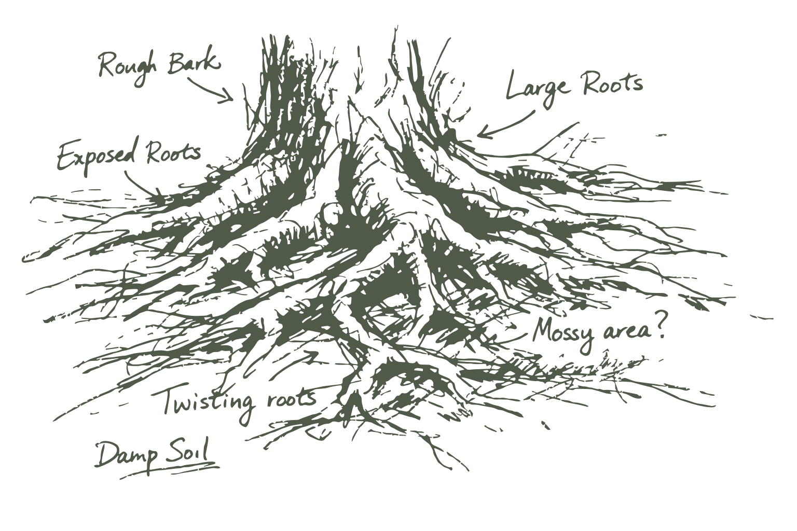
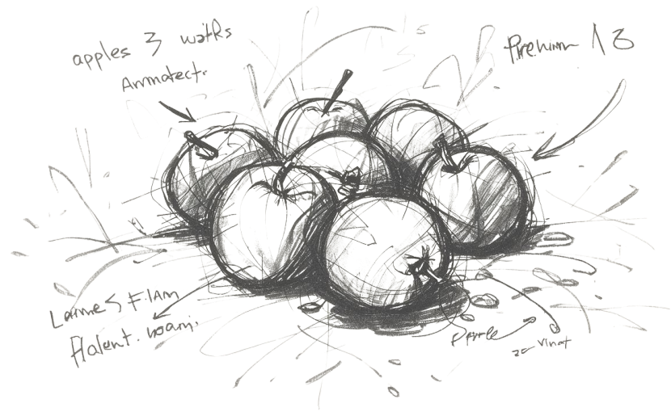

White surface
Default container for interactive content on cream.
Roots & Fruit is Matt Cromwell’s practice for WordPress operators and product teams: clear strategy, practical systems, and work that holds up in the real world. The tone is earned and calm. We favor craft over hype, and tools that stay out of the way of the people doing the work. Learn more here.
This site is the visual language for that practice: cream paper, warm ink, Knile for voice, Nunito Sans for reading, and moss green as the steady accent. Use it whenever something should feel like Roots & Fruit—the website, decks, product UI, or compact plugin chrome.
--rf-*) over hard-coded hex.
For reading layout, keep long-form text within the 60ch measure and prefer
.rf-stack, .rf-center, and .rf-cluster over one-off margins.
Content patterns (takeaways, dark card, code) have their own tab.
Generators and agents should follow DESIGN.md (Agent contract tab); humans can
browse the specimens here and treat that file as the written rules.
Two lockups cover most needs. The wordmark pairs the tree with the Roots & Fruit name for headers, title slides, and signed brand moments. The stand-alone tree icon is for tight spaces where the name already appears nearby, or where only a square badge will fit. Prefer SVG for screens; use the PNG exports when a host requires raster (social uploads, email clients, some CMS media libraries).
logos/SVG/R&F_Logo.svg
Default on cream or white. Use this for primary marketing and presentation title slides.
logos/SVG/R&F_Logo_DarkBG.svg
Full-color treatment tuned for ink, brown, and dark photography.
…_Flat_Color_LightBG.svg
Simplified fills when small sizes make the full canopy too busy.
…_Flat_Color_DarkBG.svg
Same simplification, contrast-safe on dark UI or photo backgrounds.
logos/SVG/R&F_Logo_Flat_Black.svg
Single-ink print, fax-style reproduction, or quiet mono treatments.
…_Flat_White.svg
Reverse mono on dark color fields. PNG also includes a softer off-white export.
Use the tree alone when the brand name is already visible in type, or when the container is square or circular (favicon, avatar, social profile, slide corner mark). Do not invent a new icon or substitute a lettermark.
logos/icons/R&F_Icon_1000px.svg
Default mark. Multi-green canopy reads best at medium sizes and up.
…_Flat_Color_LightBG_1000px.svg
Single moss fill. Cleaner at favicon and 32–64px sizes.
…_Flat_Color_DarkBG_1000px.svg
Lighter flat fill so the silhouette holds on ink and charcoal.
…_Flat_Black_1000px.svg
Mono UI chrome, stamps, and watermarks on light paper.
…_Flat_White_1000px.svg
Mono reverse on dark fields or photography.
These files already include safe padding for circular avatars and square tiles. Prefer them over hand-cropping the wordmark, which often clips the canopy or leaves the mark looking off-center. The mocks below show how each crop reads in a typical profile or tile context.
…_LogoMark-ProfileSafe.png
Upload this PNG for round social crops. Mock above uses the SVG mark so the preview stays sharp.
…_ProfileSafe-BeigeBG.png
PNG with a baked cream field for hosts that add no background. Preview uses SVG on cream for clarity.
…_LogoMark-SQUARE.png
PNG for square tiles and share fallbacks. Preview uses the SVG mark at the same safe inset.
logos/SVG/ holds wordmarks,
logos/icons/ holds stand-alone marks, and
logos/PNG/ holds raster exports (including 500 / 1000px sizes and profile crops).
Keep proportions locked; never add drop shadows, gradients, or glow to the official files.
Roots and apples are brand illustrations, not logos. They add atmosphere behind or beside content so layouts feel warmer and more grounded. Keep them secondary to type: if a viewer notices the art before the headline, the opacity is too high or the placement is too loud.
| Illustration | The asset category: decorative brand art (roots, apples). Never substitute these for the logo or tree icon. |
|---|---|
| Atmosphere | The role they play: soft visual depth on a surface. Typography and UI stay in front; art stays quiet. |
| Watermark | Roots used large, centered, and faint (about 10–12% opacity) behind copy. One per surface. Decorative only (alt="", aria-hidden="true"). |
| Spot art | Apples (or a smaller roots crop) anchored to a corner or sidebar at higher opacity (~40–50%), still secondary to the headline. |
<img> with opacity over layered CSS backgrounds that can double-print during transitions.
--rf-cream. On dark surfaces, prefer reverse logos or icons instead of forcing the roots art.

illustrations/roots-1.svg
Default wash behind titles, quotes, and quiet content slides.
illustrations/roots-1.svg
Inspect detail here only. Do not ship full-strength behind body copy.

Headline stays primary. Apples sit upper-right as fruit atmosphere.
illustrations/apples-1.svg
Section dividers and hero accents. Leave breathing room so type does not collide with the fruit.
illustrations/apples-1.svg
Full-strength view for production checks. In layouts, pull opacity down until type remains the hero.
<img> with CSS opacity over background-image when you need predictable fading
and simpler contrast control. Do not recolor, crop into a new mark, or treat illustrations as clickable branding.
Start from cream paper and warm ink, then add moss green as the primary accent. Orange is a rare call-to-action, not a second brand color. Blue is optional for product navigation and informational UI; marketing pages usually stay in cream, green, and ink alone.
Use this grid to choose readable pairs before you design. Rows are backgrounds; columns are text colors. Each cell shows the live combo plus its WCAG 2 contrast ratio and the best level it reaches for normal body text (AAA ≥ 7:1, AA ≥ 4.5:1). “AA large” only clears the 3:1 bar for large type (≥18pt / 14pt bold), so treat it as headings-only, never paragraph text.
Knile is the display serif for titles and section headers. Nunito Sans carries body copy, UI labels, and denser reading. Pair them consistently: Knile for voice, Nunito for clarity. Size, leading, weight, and italic each have a job; do not improvise a second scale.
sm (16px) is the smallest size. There is no xs.
Long-form uses md (18px) at 60ch with Nunito leading 1.65.
Leading tokens live on :root. Pair them with the size role; do not invent one-off values.
| Token | Value | Use with |
|---|---|---|
--rf-leading-display |
1.1 | Knile 2xl–4xl (heavy slab, short lines) |
--rf-leading-snug |
1.15 | Knile xl subheads and tight titles |
--rf-leading-body |
1.65 | Nunito md / lg (high x-height) |
--rf-leading-callout |
1.55 | Notes, alerts, and other contained copy |
--rf-leading-ui |
1.35 | Nunito sm labels, meta, compact UI |
Display leading keeps Knile lines close.
Body leading gives Nunito room between lines so the high x-height does not crowd. Prefer this pairing for article paragraphs and section ledes.
Three weights only: regular (400), semibold (600), bold (700). Knile ships those three upright files. Prefer semibold for UI labels and accent subheads; bold for primary Knile titles and strong Nunito emphasis.
Knile regular 400 — rare on screen; prefer 600/700 for titles.
Knile semibold 600 — accent subheads and quieter titles.
Knile bold 700 — default for 2xl–4xl display.
Nunito regular 400 — body, leads, most UI copy.
Nunito semibold 600 — labels, buttons, inline strong.
Nunito bold 700 — meta eyebrows and rare emphasis.
Italic is a Nunito tool for inline emphasis in body copy. Knile has no italic faces in this package;
do not fake Knile italic with font-style: italic (synthetic slant). For title emphasis, change weight or color instead.
Regular body with true italic for a short phrase, and semibold when the stress should stay upright.
A full italic sentence is fine for a pull quote or attributed line; keep it Nunito, not Knile.
| Family | Italic | Guidance |
|---|---|---|
| Knile | None loaded | Upright only (400 / 600 / 700). No oblique fallback for brand titles. |
| Nunito Sans | 400 / 600 / 700 italic | Use <em> or font-style: italic in body and UI. Prefer regular italic for prose. |
| JetBrains Mono | Optional | Code stays upright by default; italic only if a host theme needs it. |
Prefer .rf-stack (or modular space tokens) for vertical rhythm. Headings need more space
below than a tight default so Knile does not sit on the lead.
| Context | Spacing | Notes |
|---|---|---|
| Display title → lead | margin-block-end: var(--rf-space-5) (1.5rem) |
Default on docs titles; keep at least one modular step |
| Body paragraphs | Stack gap or space-5 between p |
.rf-prose uses space-5 under paragraphs |
| Section blocks | .rf-stack / space-5–space-7 |
Do not mix ad-hoc margins with stack gap on the same children |
| Meta eyebrow → title | space-2 or space-3 |
Keep the pair tight; the large gap belongs under the title |
| Measure | max-inline-size: var(--rf-measure) (60ch) |
Applies to reading lines, not the whole page shell |
| Letter-spacing | Display -0.02em; meta 0.06em |
--rf-tracking-display / --rf-tracking-meta |
Meta sits close above the title. The stack gap under the title gives the lead room to breathe.
Tracking on the eyebrow uses --rf-tracking-meta.
Spacing uses a modular scale from --rf-space-4 (1rem) with --rf-ratio 1.5, so gaps and padding stay related across pages and UI.
Corners stay soft but not bubbly. Use shadow sparingly: lift interactive surfaces, not every box on the page.
60ch. Space from 4 upward multiplies by
--rf-ratio (1.5). Prefer .rf-stack, .rf-center, and .rf-cluster
over one-off margins. Suggest size; do not prescribe fixed widths.
Even vertical gap. Children do not bring their own block margins.
Default gap is space-5 (one modular step above 1rem).
Center keeps a measured column with optional gutter.
Two lanes: moss and orange for public Roots & Fruit surfaces, product blue for app chrome. Keep one clear primary in a cluster so hierarchy stays obvious.
Use these on the website, decks, and other public brand surfaces. Moss is the default main action. Reserve orange for a single high-stakes call to action on a view (for example “Book” or “Pay”), not for every button.
Inline text uses a standard link in moss green. Avoid default browser blue links; they break the warm palette.
Use these inside tools and dashboards (Phloem, plugin chrome, ops boards). Filled product blue marks the current view or a primary in-tool action. Quiet siblings fill out a nav cluster. Do not put these on marketing heroes.
Forms stay quiet: clear labels, soft borders, and a green focus ring. Put error messages under the field in words, not color alone, so the state remains understandable without relying on red fill.
Pills mark compact status. Alerts carry page-level messages that need a full sentence. Keep motion minimal: a spinner for indeterminate waits and a progress bar when completion percentage is known.
Progress · 62%
Surfaces group related content without turning every block into a heavy card. Tables stay quiet: Knile headers, Nunito cells, and hairline rules on cream or white.
Default container for interactive content on cream.
Warm inset grouping without a heavy card look.
Alternate band when the page background is already cream.
Moss-deep surface for sidebar CTAs and short pitches on cream pages.
| Surface | When to use | Watch-outs |
|---|---|---|
| White | Forms, interactive modules, and content that needs clear lift on cream | Do not stack multiple white cards just to fill space |
| Panel | Warm grouping for related items without a strong shadow | Keep borders soft; panel is structure, not decoration |
| Cream deep | Alternate bands when the page background is already cream | Check text contrast if you place muted ink on top |
| Dark | Short callouts and CTAs that need stronger contrast on cream | Orange CTA uses ink-deep text, not white |
| Table | Comparisons, schedules, and compact reference data | Avoid zebra stripes in loud colors; hairlines are enough |
Article and marketing patterns already live on the site. Specimens below are the brand-aligned versions: keep the shapes you like, retune color and contrast to the shared tokens.
Sidebar or post-intro list. Knile title in moss, orange left rules, zero-padded numbers.
Site class ol.rf-keytakeaways is supported.
--rf-green, not a one-off olive. Body text stays warm ink on cream.
Moss-deep callout for a short pitch plus one CTA. Prefer one per sidebar or section.
A short pitch belongs here. Keep it to two or three sentences, then one button.
--rf-surface-dark / primary-deep.
Keep the window chrome, copy control, and language meta. Swap cool cyan/gray IDE colors for warm paper and moss-teal base text so code sits in the same system as the page.
Quiet inline code for terms in flow:
invoke with @robots-txt-audit when you want a focused pass.
Outlined .rf-inline-label / .inline-label for named objects: start from SKILL.md, then REFERENCE.md.
Use @robots-txt-audit on mattcromwell.com with a focus on maximum discoverability--rf-code-bg and default text at --rf-code-fg
(warm Solarized-light on cream is fine; cool gray panels are not).
Full DESIGN.md for agents and generators, shown in the code pattern below.
Edit the markdown file, then run sync-design-md-embed.ps1 so this page stays current
(see AGENTS.md in this folder).
---
version: alpha
name: Roots & Fruit
description: >-
Core Design System (CDS) agent contract for Roots & Fruit visual identity.
Use for marketing pages, product UI, plugin surfaces, and as the token source
for the presentation layer (PDS / rf-reveal) that sits on top of CDS. Prefer
CSS variables in css/tokens.css (--rf-*) when implementing in this repo.
colors:
primary: "#62744d"
primary-deep: "#4b5e2e"
primary-soft: "#e4eadc"
secondary: "#6b6560"
tertiary: "#d4844e"
tertiary-soft: "#f0d5c0"
neutral: "#faf6ee"
neutral-deep: "#f3ede2"
surface: "#ffffff"
panel: "#ebe4d8"
panel-deep: "#dfd6c6"
panel-soft: "#f3ece2"
ink: "#2c2922"
ink-deep: "#1a1a1a"
ink-soft: "#9a948c"
brown: "#40352a"
rule: "rgba(44, 41, 34, 0.14)"
info: "#1a5276"
info-soft: "#d6e6f2"
blue-muted: "#b8d0e4"
danger: "#b42318"
danger-soft: "#f8e4e2"
on-primary: "#ffffff"
on-info: "#ffffff"
on-tertiary: "#1a1a1a"
blue-nav: "#2a5f8f"
blue-mid: "#245f8c"
surface-dark: "#4b5e2e"
on-dark: "#ffffff"
on-dark-muted: "rgba(255, 255, 255, 0.78)"
code-bg: "#f3ece2"
code-fg: "#3d5c4e"
code-border: "rgba(44, 41, 34, 0.12)"
code-label-border: "rgba(44, 41, 34, 0.28)"
code-meta: "#9a948c"
green-1: "#c5d4b8"
green-2: "#9aaf86"
green-3: "#7a9268"
green-5: "#4a5a38"
green-6: "#2f3a24"
typography:
display-xl:
fontFamily: Knile, Georgia, Times New Roman, serif
fontSize: 3.5rem
fontWeight: 700
lineHeight: 1.1
letterSpacing: -0.02em
display-lg:
fontFamily: Knile, Georgia, Times New Roman, serif
fontSize: 3rem
fontWeight: 700
lineHeight: 1.1
letterSpacing: -0.02em
display-md:
fontFamily: Knile, Georgia, Times New Roman, serif
fontSize: 2.25rem
fontWeight: 700
lineHeight: 1.1
letterSpacing: -0.02em
display-sm:
fontFamily: Knile, Georgia, Times New Roman, serif
fontSize: 1.75rem
fontWeight: 600
lineHeight: 1.15
letterSpacing: -0.02em
body-lg:
fontFamily: Nunito Sans, system-ui, sans-serif
fontSize: 1.375rem
fontWeight: 400
lineHeight: 1.65
body-md:
fontFamily: Nunito Sans, system-ui, sans-serif
fontSize: 1.125rem
fontWeight: 400
lineHeight: 1.65
body-sm:
fontFamily: Nunito Sans, system-ui, sans-serif
fontSize: 1rem
fontWeight: 400
lineHeight: 1.5
label:
fontFamily: Nunito Sans, system-ui, sans-serif
fontSize: 1rem
fontWeight: 600
lineHeight: 1.35
meta:
fontFamily: Nunito Sans, system-ui, sans-serif
fontSize: 1rem
fontWeight: 700
lineHeight: 1.35
letterSpacing: 0.06em
rounded:
sm: 0.55rem
md: 0.75rem
lg: 1.25rem
pill: 999px
spacing:
1: 0.25rem
2: 0.5rem
3: 0.75rem
4: 1rem
5: 1.5rem
6: 2.25rem
7: 3.375rem
8: 5.0625rem
components:
page:
backgroundColor: "{colors.neutral}"
textColor: "{colors.ink}"
typography: "{typography.body-md}"
heading:
textColor: "{colors.ink-deep}"
typography: "{typography.display-md}"
subhead:
textColor: "{colors.primary}"
typography: "{typography.display-sm}"
body:
textColor: "{colors.ink}"
typography: "{typography.body-md}"
muted:
textColor: "{colors.secondary}"
typography: "{typography.body-sm}"
link:
textColor: "{colors.primary}"
typography: "{typography.label}"
button-primary:
backgroundColor: "{colors.primary}"
textColor: "{colors.on-primary}"
rounded: "{rounded.pill}"
padding: 0.7rem 1.15rem
typography: "{typography.label}"
button-primary-hover:
backgroundColor: "{colors.primary-deep}"
textColor: "{colors.on-primary}"
button-secondary:
backgroundColor: "{colors.panel}"
textColor: "{colors.ink}"
rounded: "{rounded.pill}"
padding: 0.7rem 1.15rem
button-tertiary:
backgroundColor: "transparent"
textColor: "{colors.primary}"
rounded: "{rounded.pill}"
padding: 0.7rem 1.15rem
button-cta:
backgroundColor: "{colors.tertiary}"
textColor: "{colors.ink-deep}"
rounded: "{rounded.pill}"
padding: 0.7rem 1.15rem
button-ghost:
backgroundColor: "transparent"
textColor: "{colors.secondary}"
rounded: "{rounded.pill}"
padding: 0.45rem 0.65rem
button-product:
backgroundColor: "{colors.blue-nav}"
textColor: "{colors.on-info}"
rounded: "{rounded.pill}"
padding: 0.7rem 1.15rem
typography: "{typography.label}"
button-product-quiet:
backgroundColor: "{colors.surface}"
textColor: "{colors.secondary}"
rounded: "{rounded.pill}"
padding: 0.7rem 1.15rem
input:
backgroundColor: "{colors.surface}"
textColor: "{colors.ink}"
rounded: "{rounded.sm}"
padding: 0.65rem 0.8rem
typography: "{typography.body-md}"
surface:
backgroundColor: "{colors.surface}"
textColor: "{colors.ink}"
rounded: "{rounded.md}"
padding: 1.5rem
surface-panel:
backgroundColor: "{colors.panel}"
textColor: "{colors.ink}"
rounded: "{rounded.md}"
padding: 1.5rem
alert-info:
backgroundColor: "{colors.info-soft}"
textColor: "{colors.ink}"
rounded: "{rounded.md}"
padding: 0.75rem 1rem
alert-success:
backgroundColor: "{colors.primary-soft}"
textColor: "{colors.ink}"
rounded: "{rounded.md}"
padding: 0.75rem 1rem
alert-warning:
backgroundColor: "{colors.tertiary-soft}"
textColor: "{colors.brown}"
rounded: "{rounded.md}"
padding: 0.75rem 1rem
alert-danger:
backgroundColor: "{colors.danger-soft}"
textColor: "{colors.danger}"
rounded: "{rounded.md}"
padding: 0.75rem 1rem
alert-note:
backgroundColor: "{colors.panel-soft}"
textColor: "{colors.ink}"
rounded: "{rounded.sm}"
padding: 1.5rem
pill:
backgroundColor: "{colors.panel}"
textColor: "{colors.ink}"
rounded: "{rounded.pill}"
padding: 0.25rem 0.65rem
typography: "{typography.meta}"
pill-active:
backgroundColor: "{colors.primary-soft}"
textColor: "{colors.primary-deep}"
rounded: "{rounded.pill}"
padding: 0.25rem 0.65rem
surface-dark:
backgroundColor: "{colors.surface-dark}"
textColor: "{colors.on-dark}"
rounded: "{rounded.md}"
padding: 1.5rem
takeaways-title:
textColor: "{colors.primary}"
typography: "{typography.display-sm}"
takeaways-item:
textColor: "{colors.ink}"
typography: "{typography.body-sm}"
takeaways-num:
textColor: "{colors.tertiary}"
typography: "{typography.label}"
code-inline:
backgroundColor: "{colors.code-bg}"
textColor: "{colors.code-fg}"
rounded: "{rounded.sm}"
padding: 0.08em 0.35em
code-inline-label:
backgroundColor: "{colors.code-bg}"
textColor: "{colors.code-fg}"
borderColor: "{colors.code-label-border}"
rounded: "{rounded.sm}"
padding: 0.1em 0.45em
code-block:
backgroundColor: "{colors.code-bg}"
textColor: "{colors.code-fg}"
rounded: "{rounded.md}"
padding: 1rem
---
## Overview
Roots & Fruit is Matt Cromwell’s practice for WordPress operators and product teams: clear strategy, practical systems, and work that holds up in the real world. The tone is earned and calm—craft over hype.
Visual identity feels like warm paper and moss: cream canvas, warm ink, Knile for voice, Nunito Sans for clarity, moss green as the steady accent.
Agents must treat this file as normative for any new UI, page, slide, dashboard, or plugin surface. When this repo already ships CSS under `css/tokens.css` and `css/components.css`, map tokens here to `--rf-*` custom properties instead of inventing parallel values. The human reference is `index.html` (Overview leads with who we are, then how to use the system).
Brand feel (always):
- Warm cream paper, not cool gray or pure white as the default page wash
- Soft, organic, grounded; never cyberpunk, glassmorphism, or neon
- One primary interactive accent (moss green); orange is rare and intentional
- Air over density; prefer an extra section or slide over crowding
Use cases this system must serve equally well:
1. Marketing / website pages
2. Presentations and client decks
3. Product UI (boards, forms, dashboards)
4. Compact plugin or admin chrome
## Colors
Semantic roles (use these names in reasoning; hex values are in front matter):
| Role | Token | Hex | Use |
| --- | --- | --- | --- |
| Page wash | `neutral` | `#faf6ee` | Default page/background |
| Wash deep | `neutral-deep` | `#f3ede2` | Alternate bands on cream |
| Surface | `surface` | `#ffffff` | Cards, inputs, lifted modules |
| Panel | `panel` | `#ebe4d8` | Warm grouping without heavy shadow |
| Ink | `ink` | `#2c2922` | Body text on cream/white |
| Ink deep | `ink-deep` | `#1a1a1a` | Headings |
| Secondary | `secondary` | `#6b6560` | Captions, meta, helper text |
| Soft ink | `ink-soft` | `#9a948c` | Disabled-adjacent meta only |
| Primary | `primary` | `#62744d` | Links, primary buttons, accent subheads |
| Primary deep | `primary-deep` | `#4b5e2e` | Primary hover / pressed |
| Primary soft | `primary-soft` | `#e4eadc` | Soft fills, success wash, chips |
| Tertiary | `tertiary` | `#d4844e` | Rare CTA only (one per view max); takeaway rules / numbers |
| Surface dark | `surface-dark` | `#4b5e2e` | Dark callout cards and article hero bands |
| On dark | `on-dark` | `#ffffff` | Titles on `surface-dark` |
| Code bg | `code-bg` | `#f3ece2` | Inline and block code paper |
| Code fg | `code-fg` | `#3d5c4e` | Default monospace / syntax base (moss-teal) |
| Code label border | `code-label-border` | `rgba(44, 41, 34, 0.28)` | Outline for `.inline-label` / `.rf-inline-label` |
| Info | `info` | `#1a5276` | Product nav / informational UI only |
| Danger | `danger` | `#b42318` | Errors and destructive states |
Rules:
- Default stack: `neutral` background + `ink` / `ink-deep` text + `primary` for interaction
- Marketing surfaces usually omit `info` blue; product UI may use it for nav and info alerts
- Never promote `tertiary` (orange) into a second brand theme or large background fills
- Before shipping text-on-color pairs, require WCAG AA (4.5:1) for body text; AA large (3:1) only for Knile headings / big stats
- Safe defaults: `ink` or `ink-deep` on `neutral`, `neutral-deep`, `surface`, `panel`, `primary-soft`; `on-primary` on `primary` / `primary-deep`; `on-tertiary` (`ink-deep`) on `tertiary` for CTA fills — never white on orange
Green scale (`green-1` … `green-6`) is for charts, illustrations, and progressive emphasis, not random decoration.
## Typography
Three families only:
- **Knile** (serif): display, titles, section headers, accent subheads. Tracking `--rf-tracking-display` (`-0.02em`). Upright weights 400 / 600 / 700 only (WOFF2s hosted on rootsandfruit.com; see `css/fonts.css`). **No italic faces** — do not synthesize Knile italic.
- **Nunito Sans** (sans): body, UI labels, tables, forms, meta. High x-height: body leading `1.65`. Weights 400 / 600 / 700, each with a true italic.
- **JetBrains Mono** (or system mono stack): code only. Never use mono for marketing body copy.
Size scale (CSS `--rf-text-*`; **no `xs`**):
| Token | Size | Role |
| --- | --- | --- |
| `sm` | 16px (`1rem`) | Floor. Compact UI, labels, meta, table cells |
| `md` | 18px (`1.125rem`) | Default body and long-form (`.rf-prose`, ledes) |
| `lg` | 22px (`1.375rem`) | Short lead / intro emphasis |
| `xl` | 28px (`1.75rem`) | Display sm (Knile subhead) |
| `2xl` | 36px (`2.25rem`) | Display md |
| `3xl` | 48px (`3rem`) | Display lg |
| `4xl` | 56px (`3.5rem`) | Display xl |
### Line-height
| Token | Value | Use |
| --- | --- | --- |
| `--rf-leading-display` | 1.1 | Knile `2xl`–`4xl` |
| `--rf-leading-snug` | 1.15 | Knile `xl` / short titles |
| `--rf-leading-body` | 1.65 | Nunito `md` / `lg` |
| `--rf-leading-callout` | 1.55 | Notes, alerts, contained copy |
| `--rf-leading-ui` | 1.35 | Nunito `sm` |
### Weights
| Token | Value | Typical use |
| --- | --- | --- |
| `--rf-weight-regular` | 400 | Nunito body; Knile regular rarely on screen |
| `--rf-weight-semibold` | 600 | Labels, buttons, Knile accent subheads |
| `--rf-weight-bold` | 700 | Knile display titles; Nunito meta / strong stress |
Do not introduce 500 or 800. Prefer semibold before bold for UI chrome.
### Italic
- **Nunito:** use `<em>` / `font-style: italic` for short inline emphasis in body; regular italic is the default stress. Semibold/bold italic are available but rare.
- **Knile:** upright only. For title emphasis, change weight or color — never fake an oblique.
- Do not italicize whole marketing heroes.
### Spacing around type
- Display title → following lead: at least `--rf-space-5` below the title (docs default).
- Body paragraphs: `.rf-prose` paragraph gap `--rf-space-5`, or a parent `.rf-stack`.
- Meta eyebrow → title: tight (`space-2`–`space-3`); large air belongs *under* the title.
- Measure: `--rf-measure` (`60ch`) on reading lines; tracking meta `--rf-tracking-meta` (`0.06em`) for uppercase eyebrows.
- Do not mix ad-hoc vertical margins with `.rf-stack` gap on the same children.
Roles:
- `display-*` = Knile hierarchy (xl → sm) with display/snug leading
- `body-lg` = short lead (`--rf-text-lg`)
- `body-md` = default reading (`--rf-text-md`)
- `body-sm` / `label` / `meta` = compact UI at `sm` (16px)
- `meta` = uppercase eyebrows at `sm` + bold + meta tracking
Optical rules (size scales alone will not fix these):
- Constrain reading columns with `--rf-measure` (`60ch`), not only the layout shell (`--rf-max`)
- Use `.rf-prose` for long-form: measure + `body-md` + body leading
- Inside callouts, use `--rf-leading-callout` and generous padding
- Do not rely on fluid viewport type alone to “fix” readability
Rules:
- Do not introduce Inter, Roboto, Arial, system-ui-only stacks, or a third display font
- Do not put Knile on long paragraphs
- Do not put Nunito Sans on the primary page title when Knile is available
- Prefer sentence case; never force all-caps on Knile display titles (meta uppercase is allowed for eyebrows only)
- If Knile webfonts are unavailable, fall back to Georgia / Times New Roman; still declare Knile first
- Do not use a size below `sm` (16px). There is no `xs` token
- Do not synthesize Knile italic; do not invent weights outside 400 / 600 / 700
## Layout
Principles drawn from *Every Layout* (Pickering & Bell): clarity and stability come from a few axioms and composable primitives, not from hard-coded breakpoints for every block. Do not invent one-off spacing like `13px` or `22px`.
### Axioms
- **Measure:** no line of text should exceed `--rf-measure` (`60ch`). Use `ch`, never a fixed `px` width, so measure tracks font-size. Flow text is capped; structural shells (`html`, `body`, `main`, nav, generic wrappers) are not.
- **Suggestion over prescription:** prefer `max-inline-size`, `min-block-size`, `gap`, and `flex-basis` over fixed `width`/`height`. Avoid data loss from overflow.
- **One space ratio:** `--rf-ratio` (`1.5`) seeds modular space from `1rem` (`spacing.4` / s0). Larger steps (`5`–`8`) multiply by the ratio. Fine UI steps `1`–`3` stay below s0 for chrome only.
- **Boxes:** global `border-box`; logical properties (`margin-block`, `padding-inline`, `max-inline-size`); reading columns may use `content-box` so `ch` measures text, not padding. See also [Every Layout · Boxes](https://every-layout.dev/rudiments/boxes/).
### Primitives (`css/layouts.css`)
| Class | Job |
| --- | --- |
| `.rf-stack` | Vertical rhythm via `gap` (default `spacing.5`). Variants: `--sm`, `--md`, `--lg`. Child block margins reset so gap owns the rhythm. |
| `.rf-center` | Centered column at `--rf-measure`. Optional `.rf-center--gutter` for inline padding. |
| `.rf-cluster` | Wrapping horizontal group (buttons, pills) with even `gap`. |
| `.rf-prose` | Long-form type + measure (see Typography). |
Shell / product chrome may still use grids and sidebars (this docs page’s `.ds-shell` is a sidebar composition). Prefer Stack + Center for article-like content.
Hierarchy:
- One job per section: one heading, one short supporting line, then content
- Prefer `.rf-stack` (or `spacing.5`–`spacing.7` gaps) between major blocks
- Heading margin below should usually be larger than the gap into the following paragraph
- Avoid dashboard clutter on brand/marketing surfaces (no stat strips, pill clusters, or competing callout stacks in the first viewport)
Page shell:
- `--rf-max` (~56rem) may wrap sidebars and specimens; paragraphs still obey `--rf-measure`
- Marketing heroes may go full-bleed for atmosphere; text blocks keep measure
Breakpoints (practical defaults):
- Compact: below ~800px, collapse sidebars, stack columns, keep tap targets pill-button sized
- Comfortable: 800px+
- Prefer intrinsic layouts (Stack, Cluster, Center) over adding many width breakpoints
## Elevation & Depth
Depth is quiet.
- Default surfaces: 1px `rule` border, optional light shadow `0 2px 12px rgba(44, 41, 34, 0.06)`
- Stronger lift only when needed: `0 8px 28px rgba(44, 41, 34, 0.1)`
- Prefer border + background shift (`surface` / `panel` / `neutral-deep`) over stacked shadows
- No neon glow, no multi-layer colored shadows, no glass blur as a brand device
## Shapes
Corner radii:
- `rounded.sm` (0.55rem): inputs, small controls
- `rounded.md` (0.75rem): surfaces, alerts, tiles
- `rounded.lg` (1.25rem): large media frames when needed
- `rounded.pill` (999px): buttons, pills, chips
Buttons are pills by default. Do not mix sharp 0-radius chrome with pill buttons in the same view unless documenting a deliberate exception.
Focus ring: soft green halo (`0 0 0 3px` color-mix of primary at ~35% opacity). Never remove focus styles.
## Components
Implement with these behaviors. Class names in this repo: `.btn`, `.input`, `.surface`, `.alert` (including `.alert--note`), `.pill`, plus layout primitives `.rf-stack` / `.rf-center` / `.rf-cluster` / `.rf-prose` (see `css/components.css`, `css/layouts.css`).
**Buttons**
- `button-primary` (`.btn--primary`): default main action (moss). One primary per section/view on marketing or mixed surfaces.
- `button-secondary`: warm panel fill for secondary actions.
- `button-tertiary`: outlined green for low-emphasis actions.
- `button-cta`: orange fill with dark ink text for contrast; at most one high-stakes CTA on a view (Book, Pay, Submit final). Do not use white text on orange. Hover lightens toward cream (`85%` orange / `15%` cream) so contrast improves; do not darken with brown.
- `button-ghost`: text-like dismissal / tertiary navigation.
- `button-product` (`.btn--product`): **product UI only** — filled info blue (`blue-nav`) with white text. Use for selected app nav, board switches, and primary in-tool actions inside dashboards (Phloem, plugin chrome, ops boards). Signals “you’re in the product,” not a marketing pitch. Do not use on marketing heroes or as a brand CTA.
- `button-product-quiet` (`.btn--product-quiet`): idle product nav chrome (white + soft border). Hover tints toward info blue; selected state uses `aria-current="page"`, `aria-pressed="true"`, or `.is-active` and matches `button-product` fill.
- In a product nav cluster, prefer quiet siblings + one current product fill — not a row of filled blue buttons.
- Disabled: reduce opacity; do not invent a gray system.
**Links**
- Marketing / long-form: `primary` green, semibold when inline. Never default browser blue.
- Product UI title links may use `info` blue (as in Phloem task titles); do not use that blue for marketing body links.
**Forms**
- Labels above fields (`typography.label`)
- Inputs: white surface, soft ink border, `rounded.sm`, green focus ring
- Errors: danger border + text message under the field (never color-only)
- Selected choice chips / toggles: use `pill-active` (`.pill--active` or `.pill.is-active`) — `primary-soft` fill with `primary-deep` text. Do not use solid `primary` with `ink` (fails contrast). Solid `primary` fills must use `on-primary` (white).
**Pills**
- Default `.pill`: panel fill + ink
- `.pill--active` / `.pill.is-active`: selected state (`pill-active` in front matter)
- `.pill--green`: same soft-green recipe as active (status “success / in play”)
- Filled moss buttons use `on-primary`, not bare `ink`
**Surfaces**
- `surface`: white module on cream
- `surface-panel`: warm panel grouping without heavy card shadow
- Cream-deep bands for alternating page sections
- `surface-dark` (`.surface--dark`): moss-deep callout on cream pages; white titles, muted white body; CTAs use `button-cta` with `ink-deep` on orange (not white on orange). Prefer one dark card per sidebar or section.
- Do not wrap every block in a shadowed card
**Key takeaways** (`.rf-takeaways` / `ol.rf-keytakeaways`)
- Knile title in `primary` green (“Key Takeaways”)
- Ordered items with 2px `tertiary` left rule, zero-padded numbers (`01`, `02`) in orange, body in `ink`
- Use in article sidebars or after the intro; keep to a short list (about 3–5 items)
- Do not restyle as bullets, pills, or icon rows
**Code**
- Inline `code` (quiet): warm `code-bg`, moss-teal `code-fg`, **no border** — for terms in sentence flow (`write-a-skill`, short flags)
- Inline label (`.inline-label` / `.rf-inline-label`): same paper + `code-fg`, **outlined** with `code-label-border` — for named objects (files, paths: `SKILL.md`). Prefer this when the token is a thing the reader should clock as a label, not a slip of code in prose
- Do not use both chromes on the same string; do not outline every `<code>` by default
- Block `.rf-code`: same paper fill; optional window dots + copy control + language meta (matches the site’s Code Block Pro chrome). Soft-wrap long lines (`pre-wrap`); do not use horizontal scrollbars in snippets
- Keep the window chrome; retune syntax base to `code-fg` / warm Solarized-light on `code-bg` rather than cool cyan on gray
- One language label in `code-meta`; do not add neon terminal themes
**Feedback**
- Pills for compact status
- Alerts for full-sentence page messages (`alert-info`, `alert-success`, `alert-warning`, `alert-danger`)
- `alert-note` (`.alert--note`): instructional how-to / guidance on `panel-soft` with a moss left rule — not a status message
- Spinner for indeterminate wait; progress bar only when percent is known
**Brand assets (non-token but mandatory)**
- Wordmark vs tree icon: wordmark when naming the brand; tree icon for favicons, avatars, tight badges
- Illustrations (`illustrations/roots-1.svg`, `illustrations/apples-1.svg`): atmosphere only. Use tokens `--rf-atmosphere` (≈0.10), `--rf-atmosphere-quiet` (≈0.065 under dense title/hero text), `--rf-atmosphere-spot` (≈0.45 for apples). Utilities: `.rf-atmosphere`, `.rf-atmosphere--quiet`, `.rf-atmosphere--spot`. When small copy sits on roots, prefer `.rf-lede-over-atmosphere` (Nunito 600 + `--rf-ink-muted`) before frosting or further dimming art. One watermark per surface. Never treat illustrations as logos or links.
- Prefer SVG for on-screen marks; PNG profile/square exports for host uploads that require raster
**Presentations (PDS layer on CDS)**
- One design system: CDS owns tokens here; the presentation layer (`/rf-reveal`) owns Pitch layouts and reveal.js chrome
- PDS vendors `css/tokens.css` via `sync-cds-tokens.ps1` (`cds-tokens.css`); do not invent parallel hex, opacities, or lede weights in the deck
- Content patterns and Surfaces & data from this package (takeaways, surfaces, quiet `rf-table`, buttons/pills, `code` / `.inline-label`, `.rf-code`) are dogfooded in the reveal `template-deck` — reuse those layout ids instead of inventing slide-only variants
- Same color/type language; more whitespace; fixed slide canvas is fine
- One atmosphere treatment per slide; do not stack watermarks
## Do's and Don'ts
**Do**
- Start from cream (`neutral`) + ink + moss (`primary`)
- Use Knile for titles and Nunito Sans for reading/UI
- Keep orange (`tertiary`) rare and singular
- Check contrast for body text (AA) before shipping
- Use the spacing and radius scales exactly
- Keep sections simple: one purpose, clear hierarchy
- Reuse `css/rf.css` (or tokens + components) when working in this brand package
**Don't**
- Don't use purple gradients, indigo glow, cool gray glass, or “AI slop” aesthetic defaults
- Don't use Inter, Roboto, Arial, or comic display fonts
- Don't make orange a theme color or page background
- Don't put more than one primary button (or one orange CTA) in a single view
- Don't use pure black (`#000`) or pure white as the default page wash
- Don't invent new hex values when a token exists
- Don't use illustrations as logos, or logos as decorative watermarks at full opacity
- Don't add drop shadows, outlines, recolors, or stretch transforms to official logo files
- Don't build dense marketing heroes with stats, chip rows, and multiple competing CTAs
- Don't remove focus indicators
- Don't use blue (`info` / `button-product`) as a marketing accent or site-wide primary; reserve it for product/info UI
- Don't mix a moss primary and a filled product button as competing “main” actions in the same cluster
- Don't create a dark-mode palette unless explicitly asked (light cream system is default)
- Don't use cool cyan/gray IDE chrome for code; stay on warm `code-bg` + moss-teal base
- Don't outline every inline `code` (that chrome is for `.inline-label` only); don't use `.inline-label` for ordinary in-flow terms
- Don't put white text on orange CTAs (including on dark cards); use `ink-deep` on `tertiary`
- Don't invent a second takeaways pattern (cards, checkmarks, emoji numbers)
- Don't introduce an `xs` size or any readable text below `sm` (16px)
- Don't invent parallel layout utilities when `.rf-stack`, `.rf-center`, or `.rf-cluster` already fit
- Don't set paragraph measure in `px`; use `--rf-measure` (`ch`)
- Don't fake Knile italic or add font weights outside 400 / 600 / 700
## Agent directives
When generating or editing UI for Roots & Fruit:
1. Read this file before choosing colors, type, radius, or components.
2. Prefer token names and `{colors.*}` references over raw hex in reasoning; emit CSS variables `--rf-*` when editing this repo’s brand CSS.
3. If a request conflicts with Do's and Don'ts, follow this file and note the conflict briefly.
4. Validate text/background pairs against WCAG AA for body copy.
5. After UI changes, self-check: cream paper present? Knile on titles? One primary action? No purple/gray-glass drift? No extra orange?
6. For brand marks and illustrations, use files under `logos/` and `illustrations/`; do not regenerate lookalikes.
7. Unknown patterns (modals, tabs, toasts, dark mode) are out of scope until added here; improvise with existing tokens and keep the same constraints rather than inventing a new visual language.
Canonical: company-docs/brand/DESIGN.md · this block is a synced copy for local browsing.